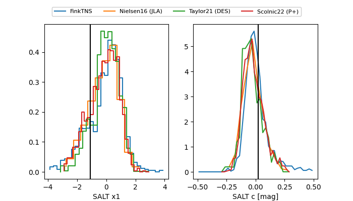

TNS: 2025vkj
YSE: 2025vkj
2025vkj (yse,tns)
equatorial (ra, dec) = (49.5191,+2.53105)
galactic (l, b) = (178.7734,-43.87700)

last ps1::g=20.18, ps1::i=20.46, ps1::r=20.09, ps1::z=20.64
2 ps1::g, 2 ps1::i, 2 ps1::r, 1 ps1::z detections